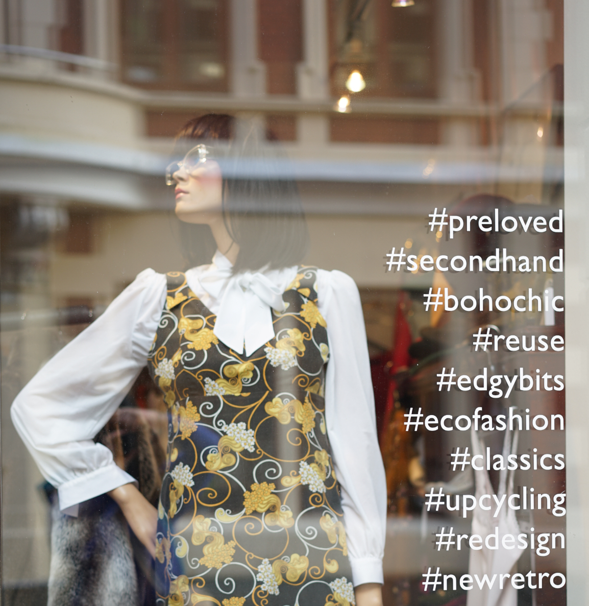

There are a lot of benefits by buying second-hand clothing.
- Reducing textile waste
- Being eco-friendly
- Creating a better recycling community.
Bergen has a lot of second-hand stores that
is dedicated to pre-owned clothes. We have
picked out 3 of them based on location and
popularity.
Clothes

Second love
Introduction
A hip store dedicated to recycled clothes. SecondLove sells beautiful, handpicked pieces from high-end brands and designers. Every item that is presented in the store has its own unique history. Here you can find the coat or hat you have always dreamt of or reinvent yourself completely.

Paulina vintage
Introduction
A store placed in one of the busy streets in downtown Bergen. At Paulina’s you will find clothes from different ears- all in a blissful, stylish mix from their collectors, donors and various others. Everything is handpicked, washed, cleaned and well presented to the costumers